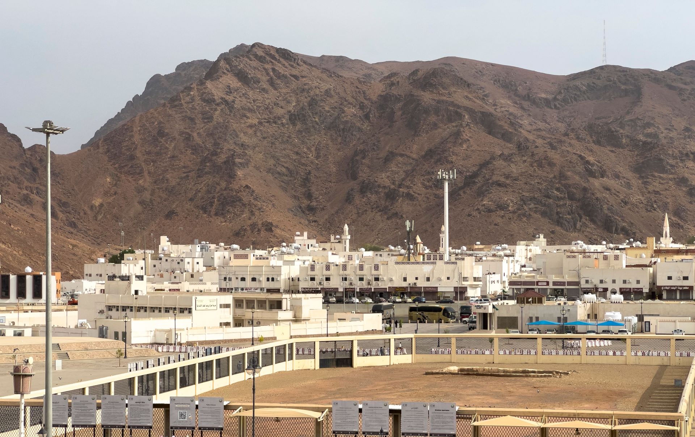
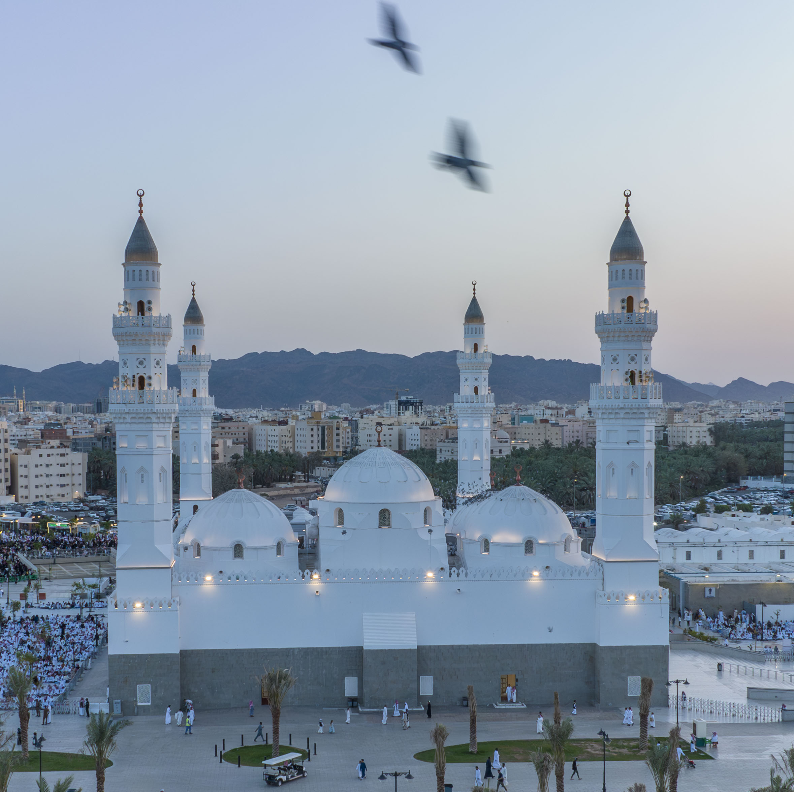

أهم ثلاثة زيارات يمكنك القيام بها في المدينة المنوّرة

جبل أحد
أكبر جبال المدينة المنورة ويبعد عن المسجد النبوي قرابة خمسة كيلومترات.
عن أنس بن مالك رضي الله عنه أن النبي صلى الله عليه وسلم قال عنه :
( هَذَا جَبَلٌ يُحِبُّنَا وَنُحِبُّهُ )

مسجد قباء
يقع على بعد ما يقرب من 3 كيلو متر من المسجد النبوي.
عن أسيد بن ظهير أن النبي صلى الله عليه وسلم قال :
( الصلاة في مسجد قباء كعمرة )